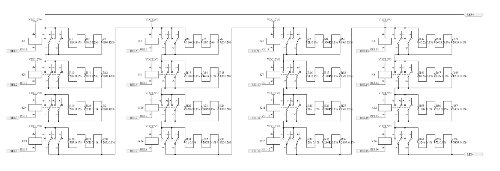

Resistor Emulator card overview
Overview of the Resistor Emulator cards available for use in the HIL Connect
Introduction
There are numerous instances in which resistance emulators play a crucial role in testing equipment. Most temperature sensors utilized in battery applications are temperature-dependent resistors (RTDs). There exists a variety of RTD types, including negative temperature coefficient (NTC) and positive temperature coefficient (PTC) resistors, in addition to platinum-based sensors such as the PT100 and PT1000.
Another critical parameter of the battery system is the isolation resistance, which must be sufficiently high to ensure the safety of the device. This is imperative to mitigate any potential risks to human life and health when employing battery-powered equipment, such as electric vehicles.
To provide good testing environment for the systems which are measuring resistance, Typhoon HIL developed multiple versions of Resistor Emulators:
- Thermistor Emulators:
- CAN Resistor Emulator Card: an eight channel thermistor emulator.
- HV CAN Resistor Emulator card: a six channel high voltage thermistor emulator
- HV CAN Isolation Resistance Emulator Card
Equivalent Circuit
Resistor emulators are realized as a binary weighted resistor strings with parallel connected relays. By setting these relays, any combination can be set, with the following limitations:
- The minimum achievable resistance is equal to the lowest resistance in the string (LSB), plus the sum of all relay contact resistances in the string (each relay adds up to 50 mΩ to the string).
The maximum achievable resistance is the sum of all resistances in the string. as follows:
- A short circuit can be emulated if all the relays are closed.
Resistor emulators are connected to the HIL system using CAN BUS.

Resistor Emulator Card Specifications
| Card name | # of channels | Control | Output range | Resolution | Accuracy | Isolation | Isolation Type | Maximum Power |
|---|---|---|---|---|---|---|---|---|
| CAN Resistor Emulator Card | 8 | CAN message | 0..655350 Ω | 10 Ω | ±0.1% ±1.2 Ω | 200 V | Channel to chassis | 0.25 W |
| HV CAN Resistor Emulator card | 6 | CAN message | 0..655350 Ω | 10 Ω | ±0.1% ±0.5 Ω | 1000 V | Channel to chassis | 0.25 W |
| HV CAN Isolation Resistance Emulator Card | 2 | CAN message | 0..65535000 Ω | 1000 Ω | ±1% ±1.2 Ω | 1000 V | Channel to chassis and channel to channel | 0.50 W |
Revision History
| Date | Version | Revision |
|---|---|---|
| June 30, 2025 | 1.0 | Initial web release version for HV CAN Resistor Emulator card and Isolation Resistance Emulator card. |